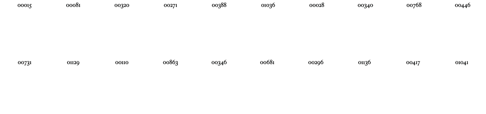
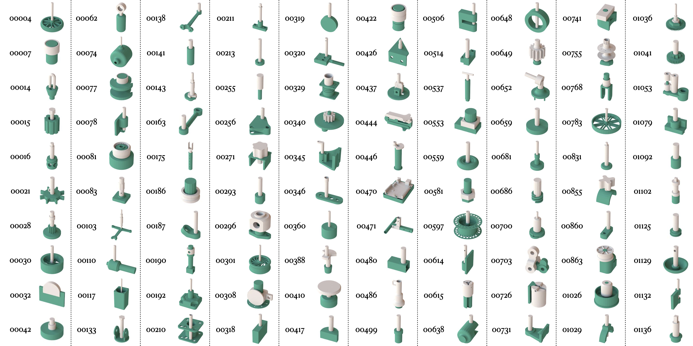
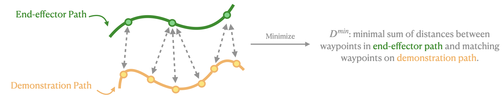
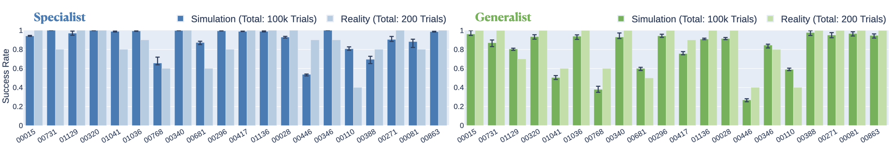
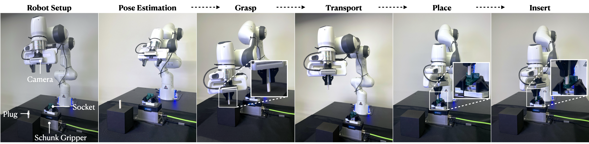
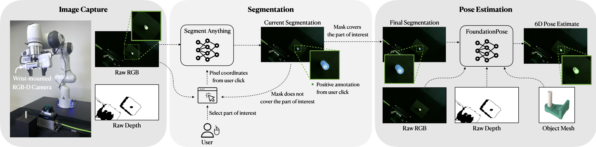

Robotic assembly for high-mixture settings requires adaptivity to diverse parts and poses, which is an open challenge. Meanwhile, in other areas of robotics, large models and sim-to-real have led to tremendous progress.
Inspired by such work, we present AutoMate, a learning framework and system that consists of 4 parts: 1) a dataset of 100 assemblies compatible with simulation and the real world, along with parallelized simulation environments for policy learning, 2) a novel simulation-based approach for learning specialist (i.e., part-specific) policies and generalist (i.e., unified) assembly policies, 3) demonstrations of specialist policies that individually solve 80 assemblies with ≈80%+ success rates in simulation, as well as a generalist policy that jointly solves 20 assemblies with an 80%+ success rate, and 4) zero-shot sim-to-real transfer that achieves similar (or better) performance than simulation, including on perception-initialized assembly.
To our knowledge, AutoMate provides the first simulation-based framework for learning specialist and generalist policies over a wide range of assemblies, as well as the first system demonstrating zero-shot sim-to-real transfer over such a range.
We provide a dataset of 100 assemblies compatible with simulation and 3D printable in the real world, as well as parallelized simulation environments for all 100 assemblies. For each assembly in our dataset, we show its unique ID and a rendering.
To train specialist policies, we propose a novel approach that combines 3 distinct algorithms:
As the kinematics of assembly are a narrow passage problem, collecting human demonstrations and using motion planners are both difficult. Therefore, we collect demonstration for disassembly instead and reverse the disassembly paths for assembly:
We formulate the robotic assembly problem as a Markov decision process and use proximal policy optimization to learn the policy and an approximation of the value function. We found the RL-only approach proposed in our previous work IndustReal is ineffective. Inspired by DeepMimic, for locomotion, we augment RL with demonstrations by directly using an imitation reward term $R_t^I$. Our baseline reward $R_t^B$ is based on our prior work IndustReal.
We define the per-timestep imitation reward $R_t^I$ as the maximum reward over all demonstrations for the given assembly.
where $M=100$ is the number of demonstrations. Conceptually, we match the current robot end-effector path with the closest demonstration path and compute imitation reward based on the distance between these two paths.
In our simulator, for a given path, the arc length between consecutive points is a function of the instantaneous velocity, resulting in disparate discretizations between robot end-effector paths and the collected demonstration paths. So we need to find a distance metric between paths that is insensitive to speed or sampling rate.
At each timestep, given an end-effector path, DTW uses dynamic programming to find a mapping between the end-effector path and each demonstration path that minimizes the sum of Euclidean distances between matching points. Here we show a visualization of the mapping between the end-effector path and a demonstration path by DTW.
Finally, we define $R_t^{I_i} = 1-\tanh(D^{min})$.
When training a generalist, we aim to reuse knowledge from already-trained specialists with a simple 2-stage policy distillation procedure:
We deploy our specialist policies over 20 assemblies and 200 trials and our generalist policy on the same set of 20 assemblies under the same experimental conditions. In these policy-only evaluations, we place the robot in lead-through, manually grasp a plug, and guide it into the socket. We then programmatically lift the plug until free from contact; apply perturbations and observation noise; and deploy a policy.
We show the per-assembly success rate in the real world compared to the simulation analogue below. The specialist and generalist policy evaluation results have shown that our simulated training conditions are sufficiently adverse to train robust and performant policies that can be transferred to the real world.
We also evaluate our specialist and generalist policies as part of a perception-initialized assembly workflow. For 5 distinct assemblies, we deploy the corresponding specialist and one generalist policy, for a total of 100 trials. The specialist mean success rate is 90.0% and the generalist mean success rate is 86%. These results indicate that 6-DOF pose estimation, grasp optimization, and our proposed methods for learning specialist and generalist policies can be effectively combined to achieve reliable assembly under realistic conditions using research-grade hardware.
Our perception pipeline in reality is based on Segment Anything (SAM) and FoundationPose. To estimate the plug or socket pose, the wrist-mounted Intel RealSense D435 RGB-D camera first captures an RGB image and a depth image. The RGB image is shown to the user, who clicks on the plug or socket of interest. The RGB image and pixel coordinates from user clicks are then passed through SAM and SAM outputs a segmentation mask for the plug or socket. The RGB image, depth image, segmentation mask and CAD model for the plug or socket are passed through FoundationPose to estimate the 6-DoF pose in the camera frame. Finally, we convert the pose to the robot frame using robot kinematics and camera extrinsics.
@inproceedings{tang2024automate,
author = {Tang, Bingjie and Akinola, Iretiayo and Xu, Jie and Wen, Bowen and Handa, Ankur and Van Wyk, Karl and Fox, Dieter and S. Sukhatme, Gaurav and Ramos, Fabio and Narang, Yashraj},
title = {AutoMate: Specialist and Generalist Assembly Policies over Diverse Geometries},
booktitle = {Robotics: Science and Systems},
year = {2024},
}